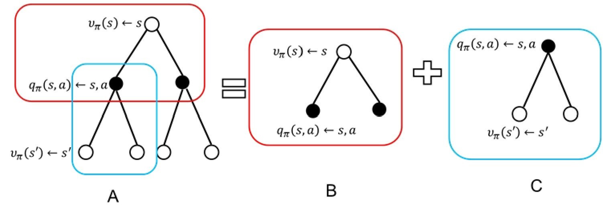
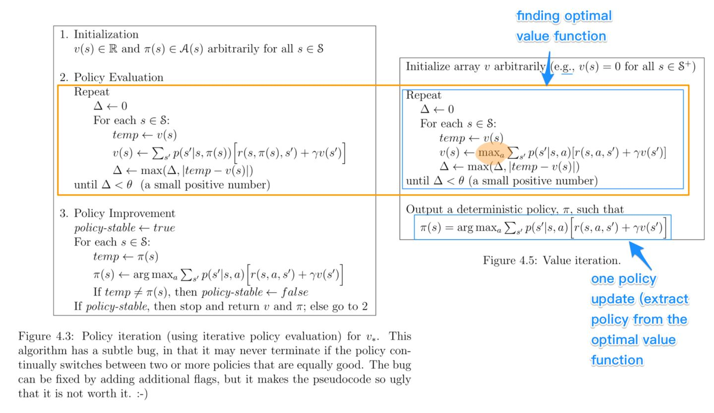

概念：
范围（horizon）：一个回合的长度
回报（return）：奖励折扣后获得的收益
状态价值函数：回报的期望
马尔可夫决策过程
强化学习的过程可以用马尔可夫过程来描述，因为当前状态只和前一个状态以及采取的action有关。马尔可夫决策过程 是强化学习的一个基本框架。
首先介绍马尔可夫奖励过程，它是马尔可夫决策过程的一个简化版本。
接下来会介绍马尔可夫决策过程中的策略评估，给定一个决策，怎么计算它的价值。
最后会介绍马尔可夫决策过程中的决策控制，包含策略迭代和价值迭代两种方式。
马尔可夫过程
马尔可夫性：
当前状态只依赖于前一个状态。
马尔可夫过程/马尔可夫链
可以用状态转移矩阵描述，略。
马尔可夫奖励过程
Markov reward process， MRP
马尔可夫奖励过程 = 马尔可夫过程 + 奖励函数
回报与价值函数
回报的定义：
Gt=Rt+1+γRt+2+γ2Rt+3+..+γT−t−1RT
上一章也介绍了，越靠后的reward折扣越多。
状态价值函数描述了某个状态的价值，它是回报的期望值（也可以看作是未来可能获得的奖励在当前状态下的表现），且V(s)的值与时间无关：
V(s)=E[Gt∣St=s]
折扣因子的作用
- 马尔可夫过程有时候带环，如果T趋近于无穷，则回报是无穷的
- 由于对环境的估计是不准确的，而且离当前时刻越远，越不确定。折扣因子可以表达这种不确定性。
- 前面得到的reward比后面的reward更有价值。（比如钱，相同的钱，先得到的钱更有价值）
计算的时候，由于每一个状态可以转移到多个状态，也就是有多种可能的路径。对每一条路径可以计算回报。状态价值函数就是对每条路径的回报做平均。
但是在实际进行时，会发现许多情况下穷举的代价太大，因此会采用一些方式对期望进行估计。其中就有蒙特卡罗方法（也就是采样取平均的方法）。蒙特卡罗方法会在后面具体介绍。但首先会介绍贝尔曼方程。
V函数的贝尔曼方程
V(s)=E[Gt∣St=s]=E[Rt+1+γRt+2+γ2Rt+3...∣St=s]=E[Rt+1+γ(Rt+2+γRt+3+..)∣St=s]=E[Rt+1+γVt+1(s′)∣St=s]
这里的Rt+1 是即时奖励，与后面的奖励无关，所以它的期望就是它本身。
另一项是下一时刻状态价值的期望，它的期望可以写成转移概率为权重的加权形式。
V(s)=Rt+1+γs′∈S∑P(s′∣s)V(s′)
这就是贝尔曼公式。其中s′是下一时刻的状态。
写成矩阵形式：
V(I−γP)VV=R+γPV=R=(I−γP)−1R
从而得到解析解。其中P是状态转移概率。
但是求逆的过程是O(N3)的复杂度，因此不适合状态空间非常大的场景。
计算马尔可夫奖励过程价值的迭代算法
这里介绍了3种方法：
- 蒙特卡罗方法
- 动态规划方法
- 时序差分学习：蒙特卡罗 + 动态规划
蒙特卡罗方法
随机采样多条轨迹，取return的平均作为当前状态的价值。
动态规划方法
根据贝尔曼公式不停迭代，直到新得到的V和上一次的V差距足够小，停止更新。
马尔可夫决策过程
马尔可夫决策过程 = 马尔可夫奖励过程 + 决策
区别于马尔可夫奖励过程，马尔可夫决策过程的未来状态不仅依赖于当前状态也依赖于当前的action
马尔可夫决策过程中的策略
策略：
π(a∣s)=P(at=a∣st=s)
策略函数给出了一个概率分布。策略的选择是从分布中采样得到一个action。
马尔可夫决策过程中的价值函数
不同于马尔可夫奖励过程的价值函数（V函数 - 价值只和状态有关），马尔可夫决策过程的价值函数是Q函数（价值与状态和行为有关）：
qπ(s,a)=E[Gt∣st=s,At=a]
Q函数的贝尔曼方程
推导和V函数的贝尔曼方程类似：
q(s,a)=R(s,a)+γs′∈S∑P(s′∣s,a)V(s′)
备份图
这一部分介绍了q函数和v函数的关系，以及q函数和下一状态q函数的关系，v函数和下一状态v函数的关系。
备份： 备份类似于动态规划的迭代过程。

图中红色的部分表示从状态s，进行一个action后的q函数值。这时状态s的价值可以根据后续的q函数值得到：
vπ(s)=a∈A∑π(a∣s)qπ(s,a)
图中蓝色部分表示采取了一个action后的状态，action的q函数值可以通过贝尔曼的形式从后续状态s‘的状态价值获得：
qπ(s,a)=R(s,a)+γs′∈S∑P(s′∣s,a)vπ(s′)
下式代入上式得：
vπ(s)=a∈A∑π(a∣s)(R(s,a)+γs′∈S∑P(s′∣s,a)vπ(s′))
由此得到当前状态和下一个状态的状态价值函数的关系。
预测与控制
马尔可夫决策过程的预测和控制是马尔可夫决策过程的核心。
预测过程： 给定一个策略，则每一个状态的价值函数是多少
输入：
- 马尔可夫决策过程 <S,A,P,R,γ> 和策略π
- 马尔可夫奖励过程 <S,Pπ,Rπ,γ>
输出：
- 价值函数 vπ (只和状态策略有关，和行为无关)
控制过程： 在没有策略的情况下，寻找一个最佳的策略
输入：
- 马尔可夫决策过程<S,A,P,R,γ>
输出：
- 最佳策略π∗ 以及它的价值函数v∗
两者是递进关系，通过预测问题来解决控制问题。
动态规划解决马尔可夫决策过程
马尔可夫决策过程可以写成贝尔曼方程的形式，因此它是满足动态规划的要求的。但是动态规划应用于马尔可夫决策过程的规划问题而不是学习问题，因此需要对环境是完全已知的情况下才可以做动态规划。
马尔可夫决策过程的策略评估
计算价值函数vπ(s)的过程就是策略评估的过程。它评估的是在状态s下，采用策略π的预期价值。
以下介绍几种种计算价值函数的方式
同步备份
前面得到公式，这个公式表现了状态价值函数的前一个状态和后一个状态的关系：
vπ(s)=a∈A∑π(a∣s)(R(s,a)+γs′∈S∑P(s′∣s,a)vπ(s′))
因此这个公式可以进行迭代，直到上一次的结果和当前结果变化很小时候，结束迭代。
由于每一次都是将所有状态都进行更新，因此叫做同步备份。
异步备份
考虑到同步备份对计算的消耗很大。
异步备份的思想是通过某种方式，使得每一次迭代不需要更新所有的状态，因为很多状态也不需要被更新。
马尔可夫决策过程控制
现在我们可以对马尔可夫决策过程做策略评估。下一个问题是，我们如何利用策略评估的结果取寻找最佳策略。
最佳价值函数：
v∗(s)=πmaxvπ(s)
最佳策略：
π∗=argπmaxvπ(s)
最佳策略可以通过最佳q函数获得：
π∗(a∣s)={1,0,a=argmaxa∈Aq∗(s,a)otherwise
也就是以概率1采取当前状态下最好的action（最好指的是使得最佳q函数得分最高）。因此首先我们需要得到一个最佳q函数。最佳q函数可以通过策略搜索来获得。
策略搜索
最简单的方式就是穷举：将所有策略都列举出来，再计算每种策略的价值函数，得到最优策略。但是时间复杂度为∣A∣∣S∣. 不可取。
因此提出了两种常用的方法：策略迭代和价值迭代
